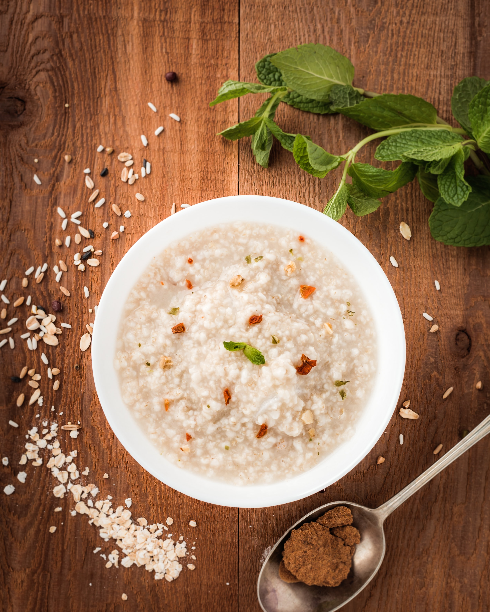

닭을 푹 고아 그 즙액으로 만들었기 때문에 닭의 영양소가 유출되어 있어 맛이 좋고 영양이 우수한 음식이다. 조리할 때 닭을 다리·날개·등·가슴 등으로 나누어 중닭(약 700g) 정도 한마리에 물을 2ℓ정도 붓고 처음에는 센 불에서 끓여 한소끔 끓어오르면 불을 줄여 한시간에서 한시간 반 정도 계속 곤다. 닭의 살이 뭉그러지고 국물이 뽀얗게 우러나면 국물을 식혀 기름이 윗면에 떠서 굳도록 한다. 기름이 떠올라 모여 굳으면 기름은 제거하고 국물은 솥이나 냄비에 옮겨담아 가라앉은 찌꺼기를 제거한다. 이렇게 준비한 국물에 쌀을 넣고 죽을 쑨다. 국물과 쌀의 비례는 4 : 1 정도로 하고 먹을 때 소금으로 간을 한다. 평안도에서는 냇가나 강가에 나가서 물고기를 잡아 어죽을 쑤어 먹는 요리가 유명한데, 이 때 물고기 대신 닭을 가지고 나가서 죽을 끓여 먹으며 즐기는 풍습도 있었다. 닭죽은 여름철 보신음식으로 좋고 병후나 노인의 보양음식으로도 적합하다. 죽이 다 되었을 때 달걀을 풀어 줄알이 지도록 하거나 반숙 정도로 연하게 익도록 가미할 수 있는데, 이때 곱게 다진 마늘을 약간 가미하면 맛이 잘 어울린다. 또는, 닭의 을 가늘게 찢어서 조금만 가미하여 끓여도 무방하다. 병후의 보양음식인 경우, 또는 별미음식으로 끓이는 경우 등을 구분하여 기호에 맞추어 닭국물의 농축농도와 양념의 여부를 결정한다. [네이버 지식백과] 닭죽 (한국민족문화대백과, 한국학중앙연구원)
닭을 푹 고아서 국물을 밭여 그 국물에 쌀을 넣고 끓인 죽. 맛이 좋고 영양이 우수한 음식이다. 여름철 보신음식으로 좋고 병후나 노인의 보양음식으로도 적합하다.